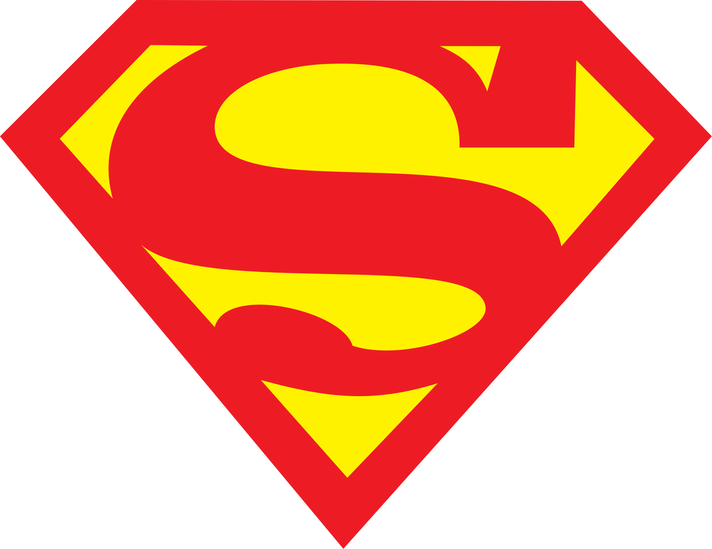
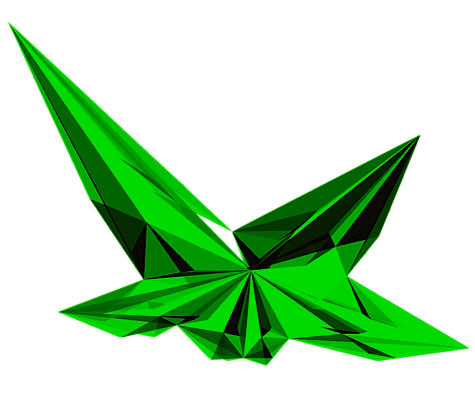

SUPERMAN
 Суперме́н — супергерой, персонаж коміксів, які випускаються компанією DC Comics. Вигаданий Джеррі Сігелом і Джо Шустером та проданий компанії Detective Comics (пізніше DC Comics). Персонаж вперше з'явився на сторінках журналу «Action Comics» #1 (червень 1938-го), а згодом і в різних радіопередачах, телевізійних програмах, фільмах, на газетних шпальтах та у відеоіграх. Супермен вважається іконою американської культури, яка відображає уявлення про справедливість. Своїм успіхом персонаж допоміг створити жанр супергероїки і зайняв першість серед інших супергероїв. Оригінальна історія розповідає, що Супермен є останнім вцілілим жителем планети Криптон, що немовлям потрапив на Землю. Живлячись силою Сонця, яскравішою за зірку рідної планети, він набув надлюдських здібностей. З їх допомогою Супермен бореться зі злом, що загрожує Сполученим Штатам, Землі та усьому Всесвіту.
Суперме́н — супергерой, персонаж коміксів, які випускаються компанією DC Comics. Вигаданий Джеррі Сігелом і Джо Шустером та проданий компанії Detective Comics (пізніше DC Comics). Персонаж вперше з'явився на сторінках журналу «Action Comics» #1 (червень 1938-го), а згодом і в різних радіопередачах, телевізійних програмах, фільмах, на газетних шпальтах та у відеоіграх. Супермен вважається іконою американської культури, яка відображає уявлення про справедливість. Своїм успіхом персонаж допоміг створити жанр супергероїки і зайняв першість серед інших супергероїв. Оригінальна історія розповідає, що Супермен є останнім вцілілим жителем планети Криптон, що немовлям потрапив на Землю. Живлячись силою Сонця, яскравішою за зірку рідної планети, він набув надлюдських здібностей. З їх допомогою Супермен бореться зі злом, що загрожує Сполученим Штатам, Землі та усьому Всесвіту.
Криптоніт (англ. Kryptonite) — вигадана кристалічна радіоактивна речовина, яка фігурує у всесвіті DC Comics, що виникла в результаті руйнування планети Криптон. Криптоніт знаменитий завдяки тому, що є єдиною слабкістю Супермена та інших криптонців — він здатний впливати на них, але вплив відрізняється залежно від кольору мінералу. Завдяки популярності Супермена слово «криптоніт» багато в чому стало поширеним аналогом виразу «ахіллесова п'ята». Вперше з'явився в серії радіошоу, присвячених Супермену. Найчастіше показується в коміксах і кіно в зеленій формі, яка позбавляє героя сил і може вбити його.Мінерал, відомий як криптоніт, було введено в радіосеріалі «Пригоди Супермена», в оповіданні «Метеор із Криптона», що транслювалось у червні 1943 року. Неканонічне оповідання стверджує, що криптоніт було введено, щоб дати актору озвучування Супермена Баду Коллаєру можливість узяти відпустку в той час, коли радіосеріал був у живому виконанні. В епізоді, де Коллаєр не був присутній для виконання, Супермен був недієздатним через криптоніт, а замінник актора озвучування робив звуки стогонів. Ця казка розповідалася Джуліусом Шварцом у його мемуарах. Однак, історик Майкл Дж. Гайд оскаржив це: у «Метеорі з Криптона» Супермен ніколи не зазнавав упливу криптоніту. Якщо криптоніт дозволив Коллаєру брати відпустки, вони були додатковою перевагою, що виявилася пізніше. Ймовірніше, криптоніт було введено як пристрій сюжету для Супермена для виявлення його походження.